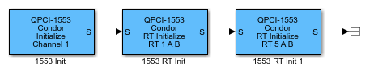

The Initialize block allows you to specify the board operation, which can be Remote Terminal, Bus Controller, or Bus Monitor. The mask dialog box for this block changes depending on the operation that you select.
To specify the bus controller, select the Initialize for Bus Controller operation parameter.
To specify the bus monitor, select the Initialize for Bus Monitor operation parameter.
To specify the remote terminal, select the Initialize for Remote Terminal operation parameter.
By default, these check boxes are selected. If you clear an operation check box, the block makes the associated parameters unavailable.
The following is a sample model of how to use the QPCI-1553 Initialize block to
initialize channel 1 of a board for Remote Terminal operation. This example and other
examples are located in the xpcdemos folder. This model:
Configures two QPCI-1553 Remote Terminal Initialize blocks, one for Remote Terminal 1 and Remote Terminal 5 on that channel.
Initializes each Remote Terminal with valid sub addresses and valid message lengths for each sub address.
You can configure each sub address for transmit, receive, or both. Configure the sub addresses that you plan to use.
